DAY 3 · CLASSROOM LECTURE 5 OF 6
Eastern and western churches, medieval religion, Luther, Protestant and Catholic reforms
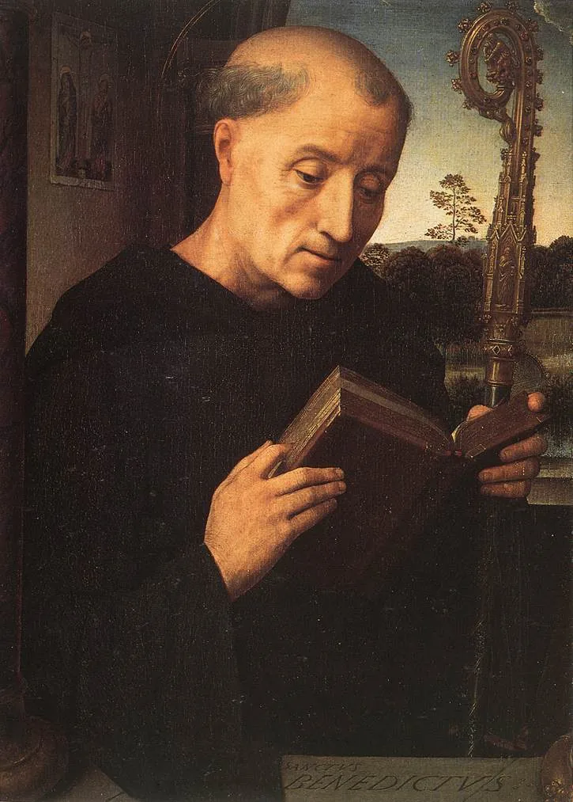
Churches shaped by the Latin language and culture.
Churches shaped by Greek language and culture.
The churches of each half of the empire develop independently.
Latin, “first among equals.” The Ecumenical Patriarch of Constantinople has a place of honor among Orthodox bishops, but not authority over them like the pope’s in the Catholic Church.
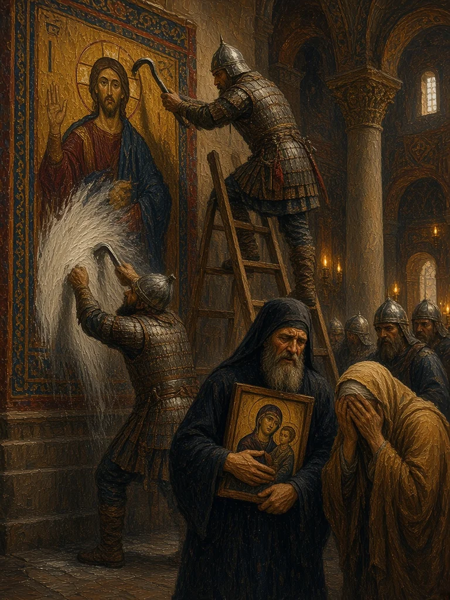
Icons are venerated, not worshiped; that distinction shaped Orthodox worship ever after.
Latin, “and [from] the Son.” Western churches added it to the Nicene Creed: the Spirit “proceeds from the Father and the Son.” The creed of 381 says only “from the Father.”
Institutions of worship, learning, and authority expand after Rome’s political collapse.
The bishop of Rome claims authority through succession from Peter.
Prayer, hospitality, agriculture, education, and manuscript preservation.
Anselm and Aquinas use reasoned argument to clarify Christian doctrine.
Universities, cathedrals, and mendicant orders reshape urban religious life.
The medieval Church was simultaneously a spiritual community, political power, landholder, school system, and provider of social care.
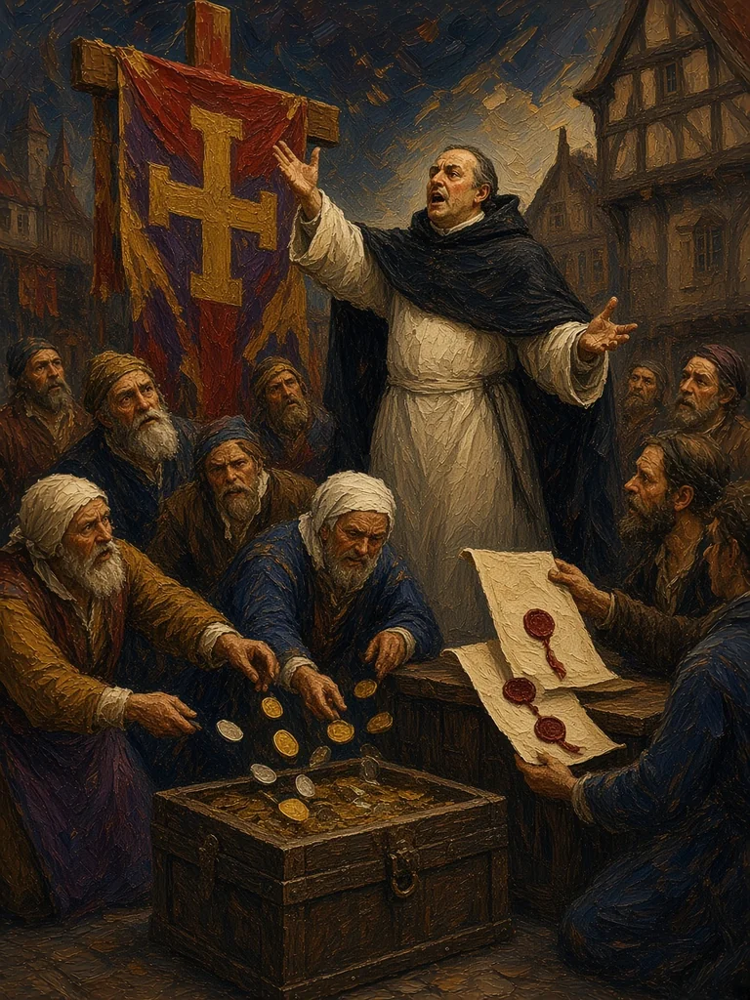
To rebuild St. Peter’s Basilica in Rome, Pope Leo X offered indulgences to those who gave alms. In 1517 the preacher Johann Tetzel brought the campaign to the edge of Saxony.
remission of part or all of the temporal and especially purgatorial punishment that according to Roman Catholicism is due for sins whose eternal punishment has been remitted and whose guilt has been pardoned
Merriam-Webster, “indulgence,” sense 4
In Catholic teaching, a reduction of the temporal punishment still due for sins that have already been forgiven. Medieval fundraising could make it sound like buying forgiveness, which the Church did not officially teach.
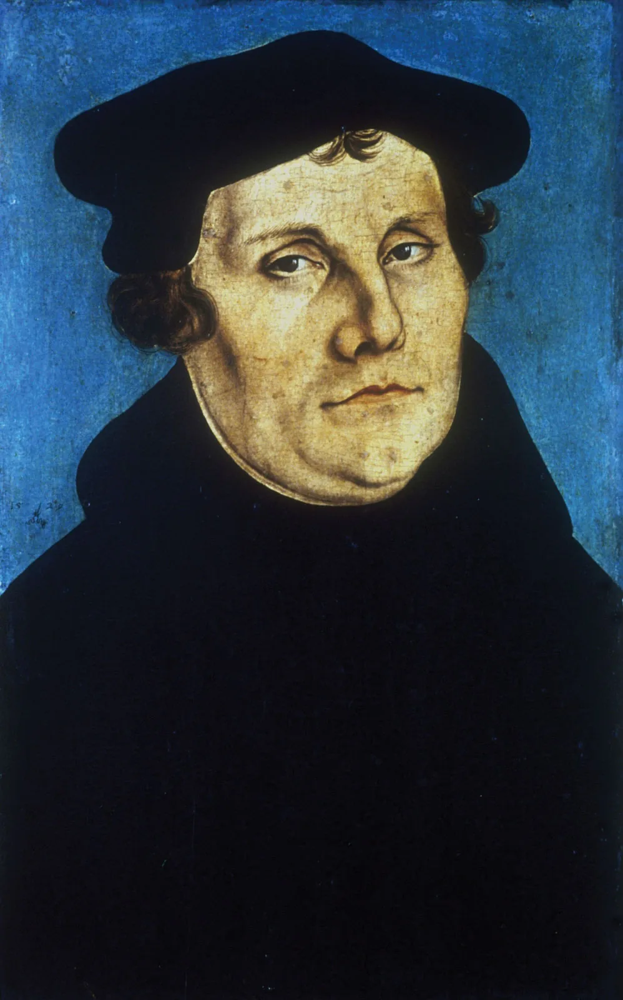
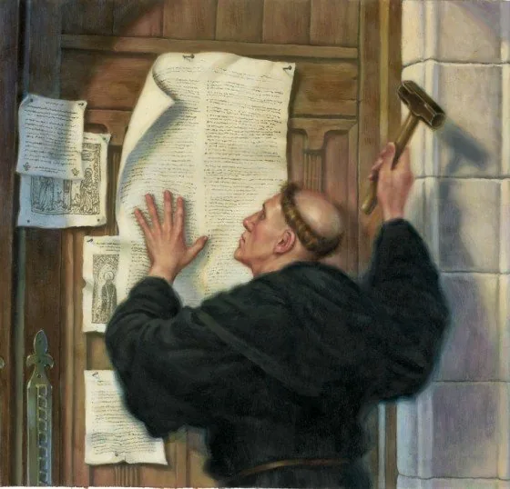
Luther develops a new understanding of salvation, or reconciliation with God. Catholic tradition teaches that grace initiates and enables human response and transformation; Luther stresses justification by grace through faith, apart from works as merit:
Salvation is, fully and completely, a work of divine grace.
God’s pardon for guilty sinners is granted to and received through faith alone, excluding all works.
Luther claims authority through an appeal to scripture alone.
The teaching authority of the Roman Catholic Church, especially as exercised by bishops or the Pope.
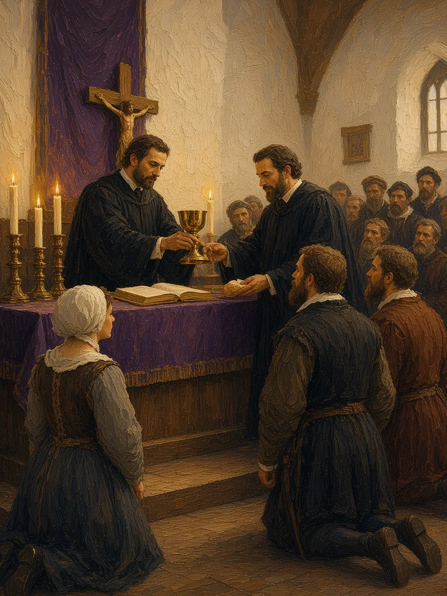
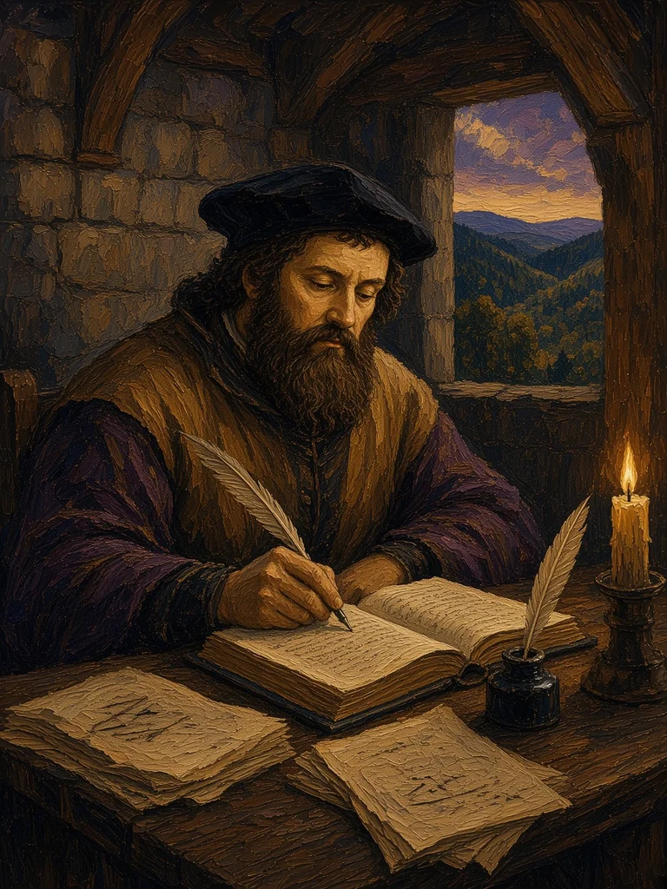
Reformation
The Reformation quickly became several reformations
God’s sovereignty and disciplined communal life; simplified worship centered on Scripture and preaching; spread through Switzerland, France, Scotland, and the Netherlands.
Political break under Henry VIII; Protestant doctrine develops within episcopal and liturgical continuity; a contested “middle way” between Protestant and Catholic inheritances.
The movements differed over worship, authority, church government, and Christ’s presence in Communion.
Anabaptists argued that reform must reach church membership, power, and everyday life.
Baptism follows a conscious profession of faith, rather than occurring in infancy.
Membership should not be automatic through birth or citizenship.
Many rejected state control of religion and the use of force in matters of faith.
Pacifism, mutual aid, simplicity, and strict moral accountability characterized important branches.
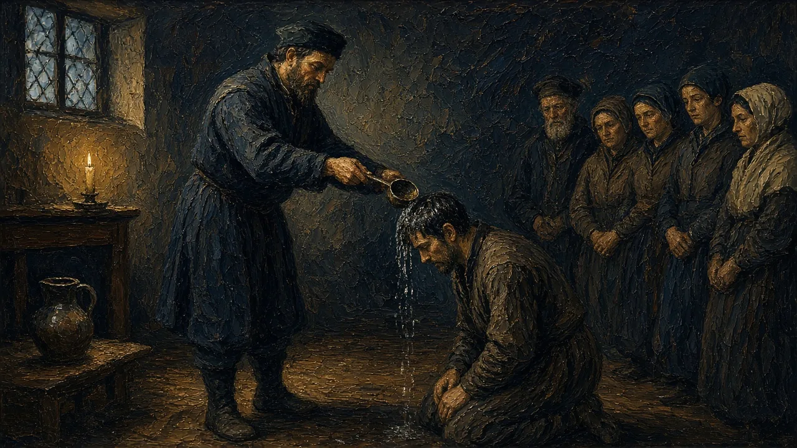
Mennonites, Amish, and related traditions preserve parts of the Anabaptist inheritance.
Liturgy and sacraments: transubstantiation affirmed.
Index of Forbidden Books; new religious orders, significantly the Jesuits.
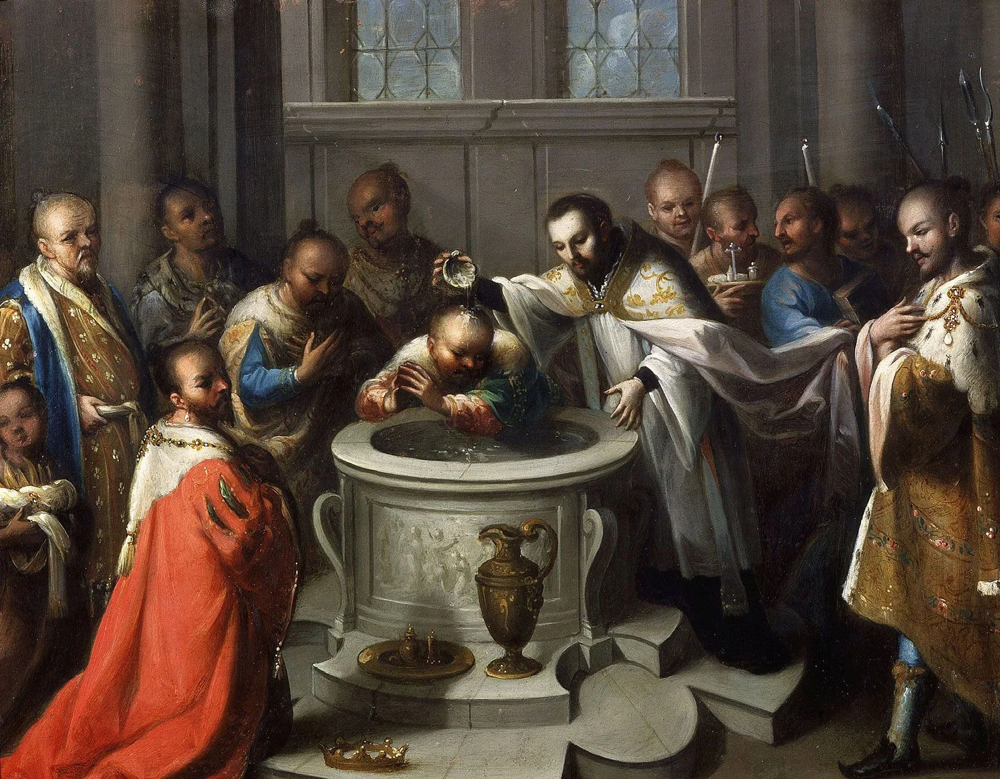
LECTURE 5 · PIERIAN SPRING
The 35-minute classroom lecture ends here. All following slides are assigned independent study for Lecture 5: Medieval Christianity and Reformation.
The nineteenth century produced both adaptation and resistance.
Scholars analyze biblical texts through language, sources, authorship, and historical setting.
Geology and evolutionary theory challenge some traditional readings of creation.
Christians organize movements concerning slavery, poverty, education, labor, and temperance.
Christianity expands worldwide, often entangled with European and American imperial power.
Modern Christianity is shaped by arguments over what may change and what must remain authoritative.
REL 210 · Chapter 11
Emphasizes liturgy, icons, bishops, and continuity with the Byzantine world.
Papal leadership, councils, sacraments, monastic and missionary orders.
Lutheran, Reformed, Anglican, and Anabaptist paths emerged through different reforms.
Christianity grew in Africa and Asia as well as Europe, long before the modern missionary era.
Christian history is not a single European story followed by a modern global expansion.
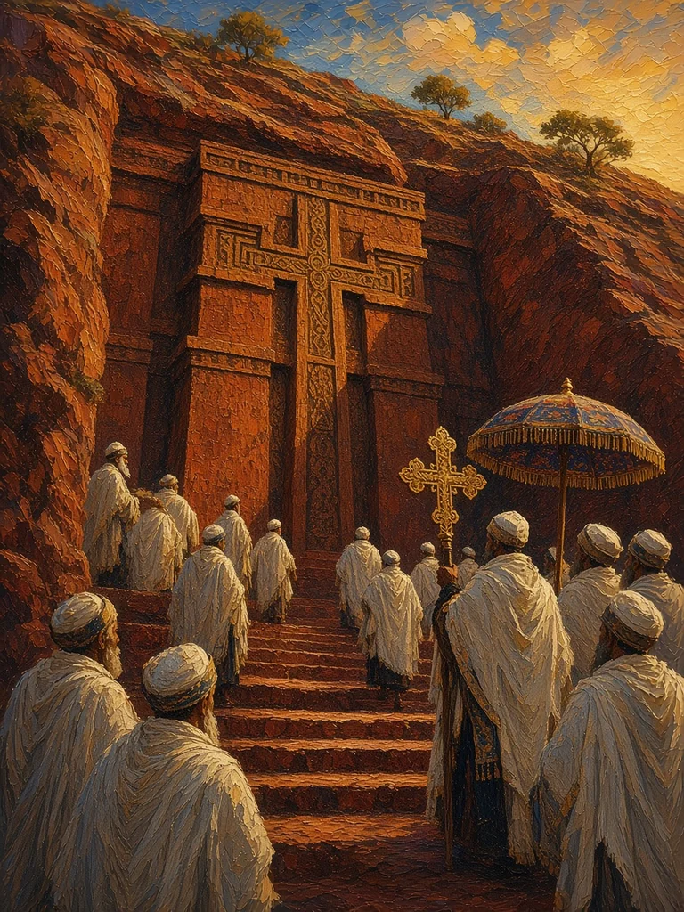
By the 16th century, the Church had become wealthy, powerful, and (many said) corrupt.
Connection to feudal monarchies: land ownership, tithes, and corvée (unpaid) labor.
The pope ruled a territory in central Italy as a prince.
Some Renaissance popes lived like worldly princes.
Vast estates, but building projects needed cash.
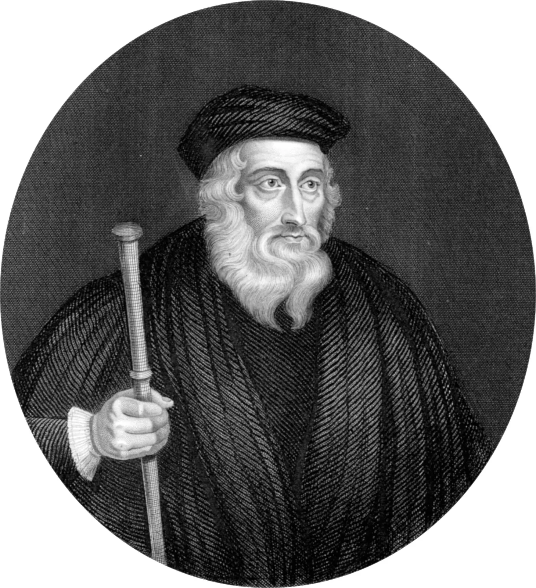
Catholic teaching that in the Eucharist the bread and wine become the body and blood of Christ in their substance, while their appearances remain. See Lecture 3.
Sacred Writings
Twenty-seven writings from the first generations of the Christian movement
Matthew, Mark, Luke, and John interpret the life, death, and resurrection of Jesus.
A narrative of the Spirit-guided expansion from Jerusalem toward Rome.
Pauline and general epistles address belief, worship, ethics, and community conflict.
Apocalyptic visions promise God’s victory amid imperial oppression.
The canon emerged gradually as communities tested texts by apostolic connection, widespread use, and consistency with accepted faith.
Sacred Writings
Christians share a Bible but differ over the location of interpretive authority
Scripture and apostolic Tradition are interpreted within the Church’s teaching office.
Scripture is read within Holy Tradition, especially councils, liturgy, and the Church Fathers.
Sola scriptura makes Scripture the final norm, while traditions still guide interpretation.
No reading is context-free: translation, worship, community, and prior assumptions shape interpretation.
“33,000 denominations” is a disputed classification, not a count of Protestant denominations.
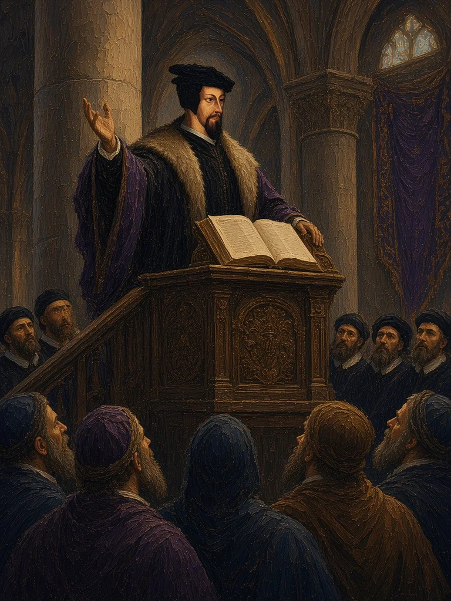
PIERIAN SPRING · REQUIRED INDEPENDENT STUDY
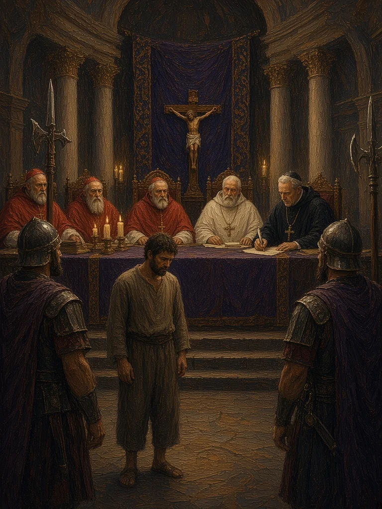
Pope Paul III founded the Roman Inquisition to investigate and defend Catholic orthodoxy in Reformation-era contexts.
Cardinals and officials exercised tribunal authority over doctrinal cases.
Investigation, censorship, confinement, penance, and sometimes torture appeared, with variation across times and places.
Protestant and Catholic governments alike sometimes used coercive power to enforce religious conformity.
Study institutional religion as a historical exercise of power, not only a set of spiritual ideas.
PIERIAN SPRING · REQUIRED INDEPENDENT STUDY
Executed in 1600 after a heresy trial involving multiple theological claims, not merely one astronomical proposition.
The 1633 condemnation involved heliocentrism, biblical interpretation, ecclesiastical authority, and politics.
The Index of Forbidden Books and other measures limited circulation of some ideas.
What happens when religious authorities control the permissible boundaries of scholarly inquiry?
Avoid reducing these complex events to an uncomplicated science-versus-religion story.
PIERIAN SPRING · REQUIRED INDEPENDENT STUDY
Revivalism, premillennial expectation, and Protestant conservatism contributed to later fundamentalist movements.
Emphasis on biblical authority, Jesus' virgin birth, atonement, bodily resurrection, and return.
Debates about biblical criticism, Darwinian evolution, and public education became flashpoints in the twentieth century.
Christian conservative, evangelical, Pentecostal, and fundamentalist communities overlap but are not identical.
Modernity produces multiple Christian responses, not a single linear move toward secularization.
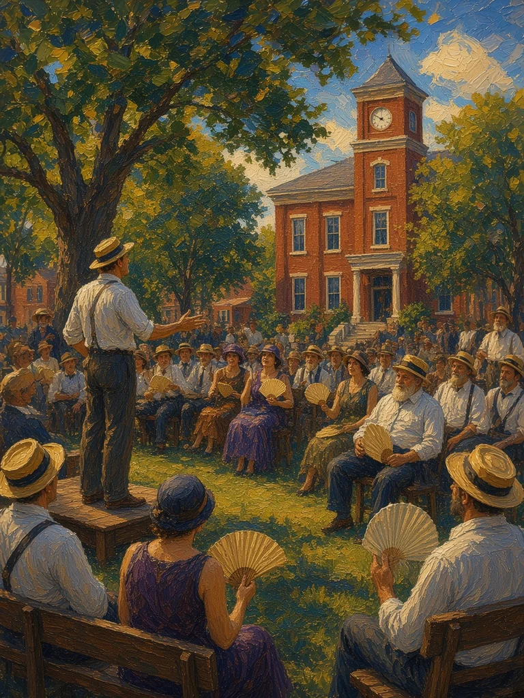
Pause & Synthesize
At each transition, what changed—and what claims or practices preserved continuity?
PIERIAN SPRING · REQUIRED INDEPENDENT STUDY
Why did Byzantine Christians disagree over sacred images?
How did pre-Luther critics, Lutherans, and Catholic reformers differ?
What disagreements arose around Scripture, grace, clergy and sacramental practice?
How do the Inquisition and later fundamentalism illustrate divergent responses to perceived threats?
Study check: explain the examples, not only the terminology. Return to earlier slides when needed.
→ / Space: Next slide
← : Previous slide
Tab / Shift+Tab: Move between pop-up terms and links
Enter / Space on a dotted term: Open its pop-up
S: Speaker notes
F: Fullscreen
O: Overview
ESC: Close an open pop-up (otherwise toggles the overview)